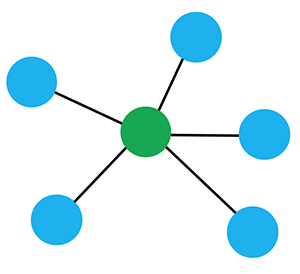
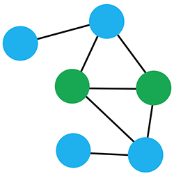

Version Control with Git, HTML Basics
Welcome to CS-5630 / CS-6630 - Visualization. In this class we will use a mix of traditional slides and interactive documents to teach, but you can also use that as a reference for reading. This is first of those interactive lectures. We will cover the basics of version control with git, as well as the basics of the web stack.
Git
We will be using a version control tool called git to track changes to our code. We’ll also be using Github, an online tool for hosting git repositories.
You should already have git installed, if not see the official documentation on how to install git on your operating system.
Why version Control?
- Keep copies of multiple states of files
By committing you record a state of the file to which you can go back any time. - Create alternative states
Imagine you just want to try out something, but you realize you have to modify multiple files. You’re not sure whether it works or is worth it. With version control you can just create a branch where you can experiment or develop new features without disturbing the main or other branches. - Collaborate in Teams
Nobody wants to send code via e-mail. Version control lets you keep your code remotely and has dedicated ways to merge and deal with conflicts. - Keep your work safe
Your hard drive breaks. Your computer is stolen. But your code is safe because you store it not only on your computer but also on a remote server. - Share
You developed something awesome and want to share it. But not only do you want to make it available, you’re also happy about contributions from others!

Types of Version Control: Central Repository
- Everybody needs to write to one server
- All operations (history, commit, branches) require server connection
- Common traditional model: CVS, SVN, etc.
- Pros:
- Simple Model
- Cons:
- Complex for larger projects
- Who is allowed to write?
- Complex for larger projects
Types of Version Control: Distributed Version Control

- Everybody has a full history of the repository locally
- No defined server - every node is equal.
- In practice: often server is used for one “official” copy of code.
But: server by convention only, no technical difference.
- In practice: often server is used for one “official” copy of code.
- Pros:
- No access issues
- Make a copy and hack away
- Ask if partner wants to accept your changes
- Everything is local
- Fast!
- No internet connection required
- Commit often model (once per feature) - don’t sync all the time.
- No access issues
- Cons:
- Extra effort to distinguish between committing and pushing/pulling (synchronizing).
Implementations
- Centralized
- CVS
- SVN
- Team Foundation Server
- …
- Distributed
- git
- Mercurial
- …
- We will be using git in this lecture.
git
- Created by Linus Torvalds, 2005
- Meaning: British English slang roughly equivalent to “unpleasant person”.
- git – the stupid content tracker.
I’m an egotistical bastard, and I name all my projects after myself. First ‘Linux’, now ‘git’. – Linus Torvalds
Why git?
- Popular (~50% of open source projects)
- Truly distributed
- Very fast
- Everything is local
- Free
- Safe against corruptions
- GitHub!
git model
Whiteboard sketch of git with a server. A git repository is essentially a large graph.
git tutorial
This is a quick intro to git, used in combination with GitHub. This is not a complete tutorial, but will use the most important git features.
We start by configuring git
1 $ git config --global user.name "YOUR NAME"
2 $ git config --global user.email "YOUR EMAIL ADDRESS"Make sure that his is set to your official school address and your correct name!
Create a folder for your project
1 $ mkdir myProject
2 $ cd myProject/Initalize the git repository
1 $ git init
2 Initialized empty Git repository in ../myProject/.git/What does git do to your file system?
1 # Let's look at what git creates
2 $ ls .git/
3 branches config description HEAD hooks info objects refs
4
5 # The interesting stuff is in the config file
6 $ cat .git/config
7 [core]
8 repositoryformatversion = 0
9 filemode = true
10 bare = false
11 logallrefupdates = true
12
13
14 # More interesting for a project with branches and remotes
15 $ cat .git/config
16 [core]
17 repositoryformatversion = 0
18 filemode = true
19 bare = false
20 logallrefupdates = true
21 [remote "origin"]
22 url = https://github.com/CS171/HW1.git
23 fetch = +refs/heads/*:refs/remotes/origin/*
24 [branch "master"]
25 remote = origin
26 merge = refs/heads/masterNow let’s create a file
1 $ echo 'Hello World' > demo.txt
2 $ cat demo.txt
3 Hello WorldLet’s add it to version control
1 $ git add demo.txtLet’s look at what is going on with the repository
1 $ git status
2 # On branch master
3 #
4 # Initial commit
5 #
6 # Changes to be committed:
7 # (use "git rm --cached <file>..." to unstage)
8 #
9 # new file: demo.txt
10 #That means: git knows that it’s supposed to track this file, but it’s not yet versioned.
Let’s commit the file. Once a file is committed, it’s state is recorded and you can go back to previous versions any time.
1 # The -m option specifies the commit message. If you don't use it you'll go into an editor to enter your commit message.
2 $ git commit -m "Committing the test file"
3 [master (root-commit) 3be5e8c] Wrote to demo
4 1 file changed, 1 insertion(+)
5 create mode 100644 demo.txt
6
7 # Did it work?
8 $ git status
9 # On branch master
10 nothing to commit, working directory cleanThat means that now the file is tracked and committed to git. But it’s still only stored on this one computer!
Next, we change a file and commit it again.
1 # Now let's change something
2 $ echo 'Are you still spinning?' >> demo.txt
3 $ cat demo.txt
4 Hello World!
5 Are you still spinning?
6
7 # Let's check the status of git!
8 $ git status
9 # On branch master
10 # Changes not staged for commit:
11 # (use "git add <file>..." to update what will be committed)
12 # (use "git checkout -- <file>..." to discard changes in working directory)
13 #
14 # modified: demo.txt
15 #
16 no changes added to commit (use "git add" and/or "git commit -a")
17
18 # So git knows that something has changed, but hasn't recorded it. Let's commit.
19 $ git commit -m "Added a line to the demo file"
20 On branch master
21 Changes not staged for commit:
22 modified: demo.txt
23
24 # That didn't work! You have to add all the files you want to commit every time. There is a shorthand that you can use to add all the tracked files: append '-a'.
25 $ git commit -a -m "added a line to the demo file"
26 [master b03178f] added a line to the demo file
27 1 file changed, 1 insertion(+)
28
29 # Better. Now, let's look at what happened up to now
30 $ git log
31 commit a939cdfeaf0a7ffb972e6616549e9053917e0673
32 Author: Alexander Lex <alex@seas.harvard.edu>
33 Date: Thu Jan 30 20:35:37 2014 -0500
34
35 spinning
36
37 commit 3be5e8c4b3691a70598d784483ef9cf35d5663ba
38 Author: Alexander Lex <alex@seas.harvard.edu>
39 Date: Thu Jan 30 20:29:52 2014 -0500
40
41 Wrote to demoCommits have a unique ID. This ID is a hash of your complete history. When we retreive your homeworks, we will tell you the commit ID of the homework we grade. Check whether that’s the correct ID!
Through this cycle of editing, adding and committing, you can develop software in a linear fashion. Now let’s see how we can create alternate versions.
Branching
Now let’s create a branch
1 $ git branch draft
2
3 # This created a branch with the name draft. Let's look at all the other branches
4 $ git branch
5 draft
6 * masterWe have two branches, draft and master. The * tells us the active branch (the HEAD).
The files in your folders are in the state as they are stored in the active branch. When you change the branch the files are changed, removed or added to the state of the target branch.
Let’s switch the branch.
1 $ git checkout draft
2 Switched to branch 'draft'
3
4 # Let's see if there is something different
5 $ cat demo.txt
6 Hello World!
7 Are you still spinning?
8
9 # No - it's the same! Now let's edit.
10 $ echo "Spinning round and round" >> demo.txt
11 $ cat demo.txt
12 Hello World!
13 Are you still spinning?
14 Spinning round and round
15
16 # And commit
17 $ git commit -a
18 [draft 059daaa] Confirmed, spinning
19 1 file changed, 1 insertion(+)We have now written changes to the new branch, draft. The master branch should remain unchanged. Let’s see if that’s true.
1 # Now let's switch back to master again
2 $ git checkout master
3 Switched to branch 'master'
4
5 $ cat demo.txt
6 Hello World!
7 Are you still spinning?The text we added isn’t here, as expected! Next we’re going to change something in the main branch and thus cause a conflict.
1 # Writing something to the front and to the end in an editor
2 $ cat demo.txt
3 I am here!
4 Hello World!
5 Are you still spinning?
6 Indeed!
7
8 # comitting again
9 $ git commit -a
10 [master 8437327] Front and back
11 1 file changed, 2 insertions(+)At this point we have changed the file in two different branches of the repository. This is great for working on new features without breaking a stable codebase, but it can result in conflicts.
Let’s try to merge those two branches.
1 # the git merge command merges the specified branch into the currently active one. "master" is active, and we want to merge in "draft".
2 $ git merge draft
3 Auto-merging demo.txt
4 CONFLICT (content): Merge conflict in demo.txt
5 Automatic merge failed; fix conflicts and then commit the result.
6
7 # The result
8 $ cat demo.txt
9 I am here!
10 Hello World!
11 Are you still spinning?
12 <<<<<<< HEAD
13 Indeed!
14 =======
15 Spinning round and round
16 >>>>>>> draft
17
18 # The first line was merged without problems, The final line, where we have two alternative versions is a conflict. We have to manually resolve the conflict.
19
20 # Once this is done, we can commit again.
21 $ git commit -a
22 [master 4dad82f] Merge branch 'draft'
23
24 # Everything back in order.
25 $ git status
26 # On branch master
27 nothing to commit, working directory cleanThese are the basics of git on a local server. Now we’ll learn how to sync with other people. This can be done with just git, but we’ll be using GitHub as we’re also using GitHub in the homeworks.
Working with GitHub
First, we’ll create a new repository on github by going to https://github.com/new.

Now let’s clone the repository from GitHub.
1 $ git clone https://github.com/alexsb/Demo.git
2
3 # Let's see how the config looks for this one.
4 $ cat .git/config
5 [core]
6 repositoryformatversion = 0
7 filemode = true
8 bare = false
9 logallrefupdates = true
10 ignorecase = true
11 precomposeunicode = true
12 [remote "origin"]
13 url = https://github.com/alexsb/demo.git
14 fetch = +refs/heads/*:refs/remotes/origin/*
15 [branch "master"]
16 remote = origin
17 merge = refs/heads/masterThis creates a local copy of the (empty) GitHub repository. We will just start working with that and commit and push the code to the server. If you’d like to add an existing repository to GitHub, follow these instructions.
1 # What's currently in the repository?
2 $ ls
3 LICENSE README.md
4 # Write something to demo.txt.
5 $ echo "Hello world!" > demo.txt
6 echo "Hello world" > demo.txt
7 # Add demo.txt to the repository.
8 $ git add demo.txt
9 # Commit the file to the repository.
10 $ git commit -a -m "added demo file"
11 [master 2e1918d] added demo file
12 1 file changed, 1 insertion(+)
13 create mode 100644 demo.txt
14 # Pushing it to the server!
15 $ git push
16 Counting objects: 3, done.
17 Delta compression using up to 8 threads.
18 Compressing objects: 100% (2/2), done.
19 Writing objects: 100% (3/3), 324 bytes | 0 bytes/s, done.
20 Total 3 (delta 0), reused 0 (delta 0)
21 To https://github.com/alexsb/demo.git
22 8e1ecd1..2e1918d master -> masterWe have now committed a file locally and pushed it to the server, i.e., our local copy is in sync with the server copy.
Note that the git push command uses the origin defined in the config file. You can also push to other repositories!
Next, we will make changes at another place. We’ll use the GitHub web interface to do that.
Once these changes are done, our local repository is out of sync with the remote repository. To get these changes locally, we have to pull from the repository:
1 $ git pull
2 remote: Counting objects: 3, done.
3 remote: Compressing objects: 100% (2/2), done.
4 remote: Total 3 (delta 1), reused 0 (delta 0), pack-reused 0
5 Unpacking objects: 100% (3/3), done.
6 From https://github.com/alexsb/demo
7 2e1918d..5dd3090 master -> origin/master
8 Updating 2e1918d..5dd3090
9 Fast-forward
10 demo.txt | 1 +
11 1 file changed, 1 insertion(+)
12 # Let's see whether the changes are here
13 $ cat demo.txt
14 Hello world
15 Are you still spinning?Other GitHub Features
- GitHub Issues
Github Issues are a great way to keep track of open tasks and problems. Issues can be references and closed from commits. - Forking
Forking is essentially making use of the distributed nature of git, while having the benefits of a server. When you fork a repository you make a clone of someone else’s code that you are not allowed to read. The repository appears in your github account and you can start editing the code. If you think you improved the code, you can send a “pull request” to the original owner. The owner can then review your code and merge your modifications into his main repository. Forking is hence virtually the same as branching, with the exception that it resolves issues with write permissions.
GUI Clients
- GitHub Desktop
Good option if you want a GUI client. Download here - Integrated in IDEs
Many operations can be done out of a IDE such as WebStorm
Setting up your homework repositories.
The homeworks are hosted in a git repository. Every time we release a homework we will just update the repository. You can then pull from that repository to get the latest homework on your computer.
To get the homework repository, run the following:
1 $ git clone https://github.com/dataviscourse/2015-dataviscourse-homework -o homework
2 $ cd 2015-dataviscourse-homeworkNote that by using the -o homework option we’re not using the default remote origin but a user-defined remote called homework.
Next, create a new repository on the Github website following the dataviscourse15-hw-lastname-firstname naming convention. Use all lowercase for your repository name. It is important that your repository be named exactly as above so that we can access it for grading.
Ensure your new repository is private and don’t click the option to “Initialize the repository with a README”.
Run the two commands described on GitHub under the heading “Push an existing repository from the command line”. For my repository these are:
1 $ git remote add origin https://github.com/alexsb/dataviscourse15-hw-lex-alexander.git
2 $ git push -u origin masterOn GitHub, go to the repository settings and navigate to the Collaborators page. Add datavis-ta as a collaborator to your private repository.
Now your homework repository is all set!
Committing
While working on homework assignments, periodically run the following:
1 $ git add -A
2 $ git commit -m "Describe your changes"
3 $ git pushRemember, the git commit operation takes a snapshot of your code at that point in time but doesn’t write to the server.
The git push operation pushes your local commits to the remote repository. It is important that you push your changes or others will not be able to see them.
You should do this frequently: as often as you have an incremental, standalone improvement.
Submitting your homework
We will automatically copy your repository after each homework deadline. You do not need to do anything else to submit your work (but make sure that you have pushed the latest version of your homework). We will count the time of your last commit to the Github repository as your submission time.
Refer to the homework page for more information on how to submit your homework.
Getting new homework assignments
When we release a new assignment we will simply add it to the homework github repository.
To get the latest homework assignments and potential updates or corrections to the assignment, run the following.
1 $ git pull homework masterMake sure to have all your changes committed before you do that.